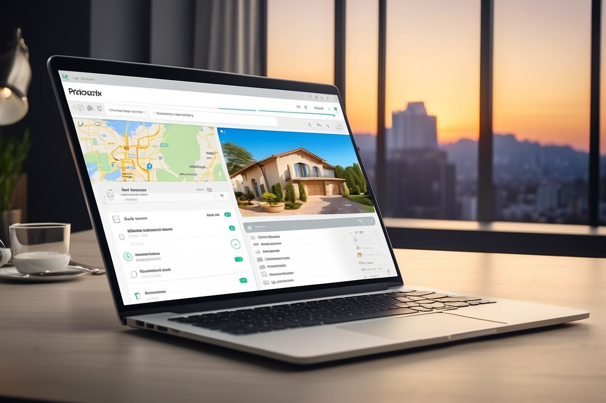

Створення профілю оселі.
Можливість для детального опису вашої нерухомості та надання базової інформації мешканцям.
Розроблений з урахуванням вашого комфорту та простоти використання, дозволяючи легко та швидко
заповнювати всю необхідну інформацію. Ви зможете розміщувати оголошення про здачу
в оренду будь-якого типу нерухомості, будь то будинок, квартира чи навіть окрема кімната.
Важливою особливістю цього інструменту є можливість створювати профілі для різних видів нерухомості та
об'єднувати їх у одному аккаунті. Це зробить управління різними об'єктами більш зручним та ефективним.
Крім того, ви також можете надавати доступ до вашого профілю надійним особам, що дозволить їм легко керувати
нерухомістю.
Наповнення оселі.
Функція, що дозволяє детально описувати та документувати всі об'єкти та предмети, які
знаходяться в місці проживання. Ця функція надає користувачам доступ до попередньо розроблених шаблонів та
універсальної форми, яка полегшує процес внесення інформації про речі та їх стан, а також інструкцій щодо
використання. Завдяки цій можливості, ви зможете докладно описати кожен предмет, його поточний стан та
навіть
надати фотографії для кращого візуального представлення. Ця інформація є надзвичайно важливою для формування
акту прийому-передачі оселі. Після внесення даних, їх можна легко використовувати для створення офіційного
документа, який фіксує стан та наявність об'єктів в оселі, що дуже корисно при здачі в оренду, продажу або
будь-яких інших транзакціях, пов'язаних з нерухомістю.
Пропозиції, вподобання та дискусії. Для орендаря.
Ви шукаєте оселю?
Вам сподобалась знайдені варіанти, підпишиться на них та чекайте коли вас ухвалять до дискусії.
У вас немає часу на пошук оселі або у вас є свої критерії ідеальної оселі, можна створити "пошуковий профіль
орендаря" активувати його і чекати пропозицій від власників.
Коли ви або вас ухвалять до дискусії вам відкриється контактна інформація та додаткові можливості.
Підписники, підписки та дискусії. Для власника.
Виставили оголошення і ваша оселя сподобалась орендарям, вони будуть вашими підписниками.
У вас є власні критерії? Хочете самі обрати орендаря? Зайдіть в пошук орендаря та шукайте користувачів яким
підходять ваші умови та запропонуйте свою оселю підписавшись на них.
Коли ви або вас ухвалять до дискусії вам відкриється контактна інформація та додаткові можливості.

Discussio угода оренди нерухомого майна.
Наша платформа дозволяє легко та швидко створювати угоди між орендарем та орендодавцем
всього
за кілька хвилин. Ви можете згенерувати стандартні умови оренди нерухомого майна або додавати власні
додаткові
умови. Після створення угоди, ви можете відправити її орендарю для розгляду та погодження, щоб він міг
докладно
з нею ознайомитись та прийняти рішення. Після погодження умов угоди, її можна легко роздрукувати та
підписати на місці.
Акт прийому-передачі оселі.
Після погодження умов орендної угоди, ви зможете створити акт прийому-передачі оселі. Цей
акт
міститиме інформацію про угоду та опис наповнення вашої оселі, яку ви передаєте орендарю, а також показники
лічильників на момент передачі. Ви зможете надрукувати цей акт та підписати його при зустрічі. Крім того,
акт
буде збережений в вашому профілі оселі з детальним описом та фотографіями всіх предметів на момент передачі
оселі.
Пошук оселі.
Наша платформа надає вам можливість легко знаходити житло, яке відповідає
вашим вимогам та вподобанням. Ви можете вибирати оселі з врахуванням різних критеріїв, таких як тип мешканця
(студент, жінка, чоловік, сім'я), тип оселі (будинок, квартира, кімната), наявність укриття та можливість
проживання з тваринами, та багато іншого.
Зручно, що ви можете автоматично переносити ваші параметри з вашого пошукового профілю, що економить вам час
і
зусилля, оскільки вам не потрібно постійно заповнювати форму пошуку. Наша система робить пошук оселі
максимально
простим та зручним, щоб ви могли знайти ідеальне житло для себе.

Пошук орендаря.
Можливість знаходити профілі потенційних орендарів, які
відповідають вашим особистим критеріям. Ви можете використовувати різні фільтри, такі як бюджет, мета
переїзду
та термін оренди, для пошуку орендарів, які вам підходять. Ви можете також здавати свою оселю тільки на
якийсь
конкретний відрізок часу який потрібен орендарю.
Наша система дозволяє знаходити орендарів, які шукають саме вашу оселю з врахуванням ваших параметрів. Крім
того, ви можете автоматично переносити параметри вашої оселі у форму пошуку, що робить процес пошуку
орендарів
ще зручнішим і швидшим.
Пошуковий профіль орендаря.
Вибір іншого житла - це легко та зручно завдяки "Пошуковому профілю орендаря". Лише три
кроки
розділяють вас від ідеального житла.
Крок перший: Опишіть свої потреби та бажання щодо оселі, вказавши для кого і який формат вам потрібен.
Крок другий: Встановіть параметри оселі, оцініть інфраструктуру та особливості, які вам важливі.
Крок третій: Зазначте терміни, бюджет та додаткову інформацію.
Після активації вашого пошукового профілю, власники нерухомості зможуть надсилати вам пропозиції, які
відповідають вашим потребам. Це швидкий та ефективний спосіб знайти ідеальне житло для вас.
Статистика комунальних.
За допомогою цієї функції, ви можете створювати комунальні послуги та вибирати різні
варіанти
розрахунку витрат. Ви маєте можливість вести свою власну статистику, проводячи детальний розрахунок
використання
комунальних ресурсів, таких як вода, газ, електроенергія, тощо.
Ця функція сприяє обміну даними між орендарем та орендодавцем, дозволяючи точно відслідковувати витрати та
встановлювати звіти про споживання ресурсів щомісяця. Це робить процес обліку комунальних послуг більш
прозорим
та допомагає уникнути спорів між сторонами. Таким чином, ви можете зручно та ефективно керувати комунальними
послугами в вашій оселі, долати непорозуміння та забезпечувати точний розрахунок витрат.
Мешканці оселі
Додавши орендаря до списку мешканців оселі у вас з'являється можливість надавати орендарям
дозволи до різних функцій оселі. Починаючі від внесення показань лічильників до повного керування оселею з
можливістью самим шукати собі сусідів по оселі.
Дозволи оселі.
Адміністрування/представник:
Додавши користувача до оселі його можна зробити адміністратором оселі або представником. Це
буде корисним якщо ви захочете передати управління оселі членам сім'ї або друзям на момент вашої відсутності
щоб
вони мали доступ до інформації про вашу оселю та могли неї керувати
|
Система оцінювання орендарів.
Для власників оселі вибір надійного орендаря може стати великим завданням. Щоб допомогти
власникам обирати порядних та надійних орендарів, ми впроваджуємо систему "Рейтинг орендаря".
Ця система дає можливість власникам оцінити орендаря, який проживав у їх оселі. Щомісяця
власник може залишати короткий відгук про орендаря та визначити, на скільки йому було комфортно з
цим орендарем мати справу.
Важливість цієї системи полягає в тому, що вона створює атмосферу довіри між власниками та
орендарями. Вона сприяє розвитку довіри і забезпечує комфортне та безпечне співжиття для обох
сторін.
Система оцінювання власників.
Власники також можуть бути
оцінені та рецензовані, але в контексті "Рейтингу власника оселі". Орендарі висловлюють
свою думку про власників нерухомості, з якими вони мали справу. Цей рейтинг базується на досвіді орендарів
та допомагає іншим потенційним орендарям зрозуміти, яким власникам можна довіряти.
Система "Рейтинг власника оселі" допомагає орендарям приймати
інформовані рішення щодо оренди житла та створює сприятливу атмосферу відкритості і довіри між сторонами.
Вона також допомагає власникам покращити якість обслуговування своєї нерухомості та підвищити довіру до них
серед потенційних орендарів.